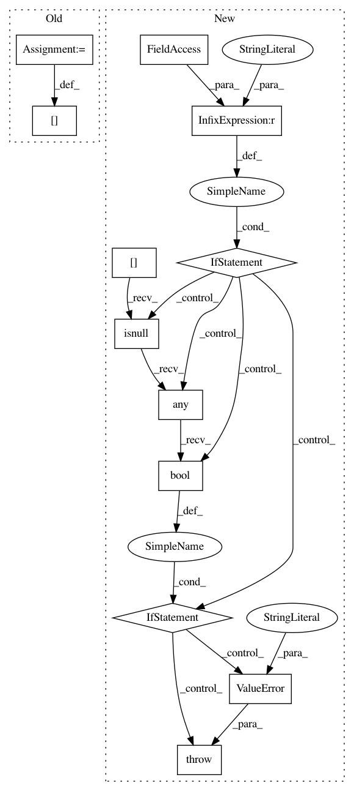

3526a6d7d5005d0cb126a39c894ad7f46b441260,category_encoders/basen.py,BaseNEncoder,transform,#BaseNEncoder#Any#Any#,150
Before Change
// impute missing values only in the generated columns
generated_cols = util.get_generated_cols(X, X_out, self.cols)
X_out[generated_cols] = X_out[generated_cols].fillna(value=0.0)
if self.return_df or override_return_df:
return X_out
else:
After Change
if self.handle_missing == "error":
if X[self.cols].isnull().any().bool():
raise ValueError("Columns to be encoded can not contain null")
if self._dim is None:
raise ValueError("Must train encoder before it can be used to transform data.")
// first check the type
In pattern: SUPERPATTERN
Frequency: 3
Non-data size: 12
Instances
Project Name: scikit-learn-contrib/categorical-encoding
Commit Name: 3526a6d7d5005d0cb126a39c894ad7f46b441260
Time: 2018-11-17
Author: jcastaldo08@gmail.com
File Name: category_encoders/basen.py
Class Name: BaseNEncoder
Method Name: transform
Project Name: scikit-learn-contrib/categorical-encoding
Commit Name: 3526a6d7d5005d0cb126a39c894ad7f46b441260
Time: 2018-11-17
Author: jcastaldo08@gmail.com
File Name: category_encoders/basen.py
Class Name: BaseNEncoder
Method Name: fit
Project Name: scikit-learn-contrib/categorical-encoding
Commit Name: 3526a6d7d5005d0cb126a39c894ad7f46b441260
Time: 2018-11-17
Author: jcastaldo08@gmail.com
File Name: category_encoders/binary.py
Class Name: BinaryEncoder
Method Name: fit